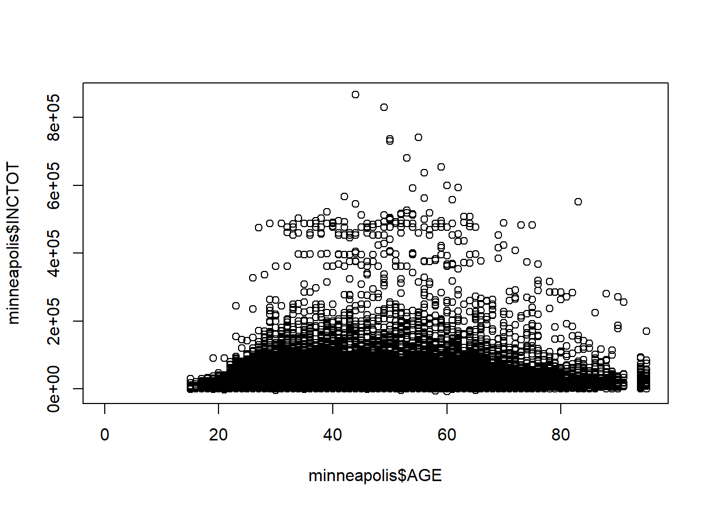
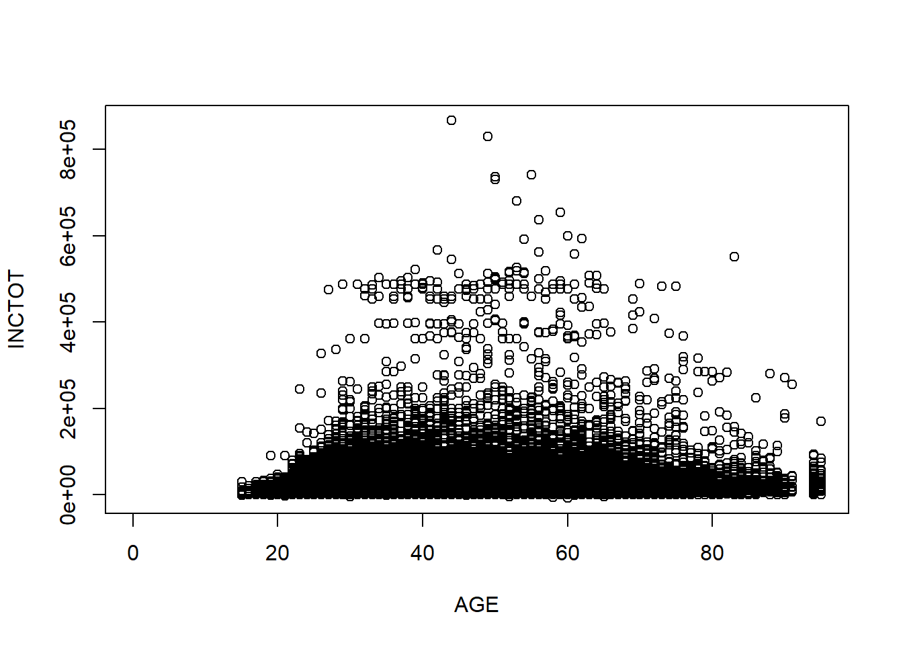
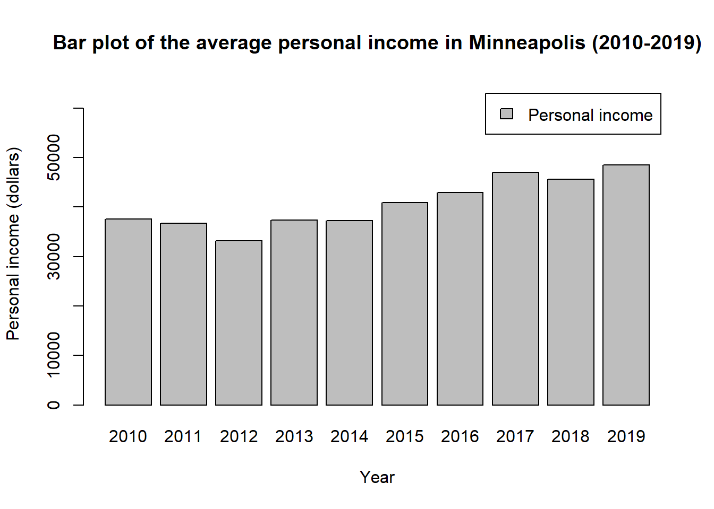
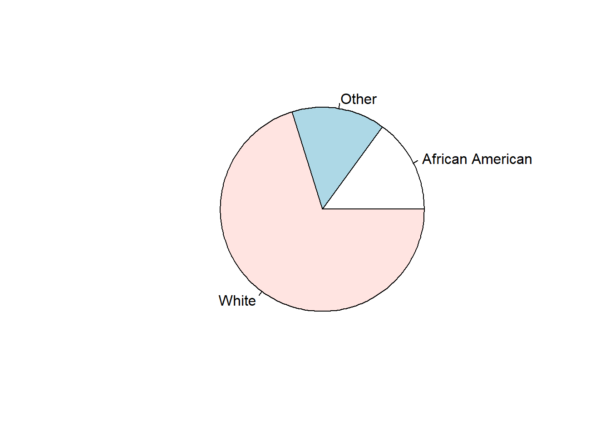
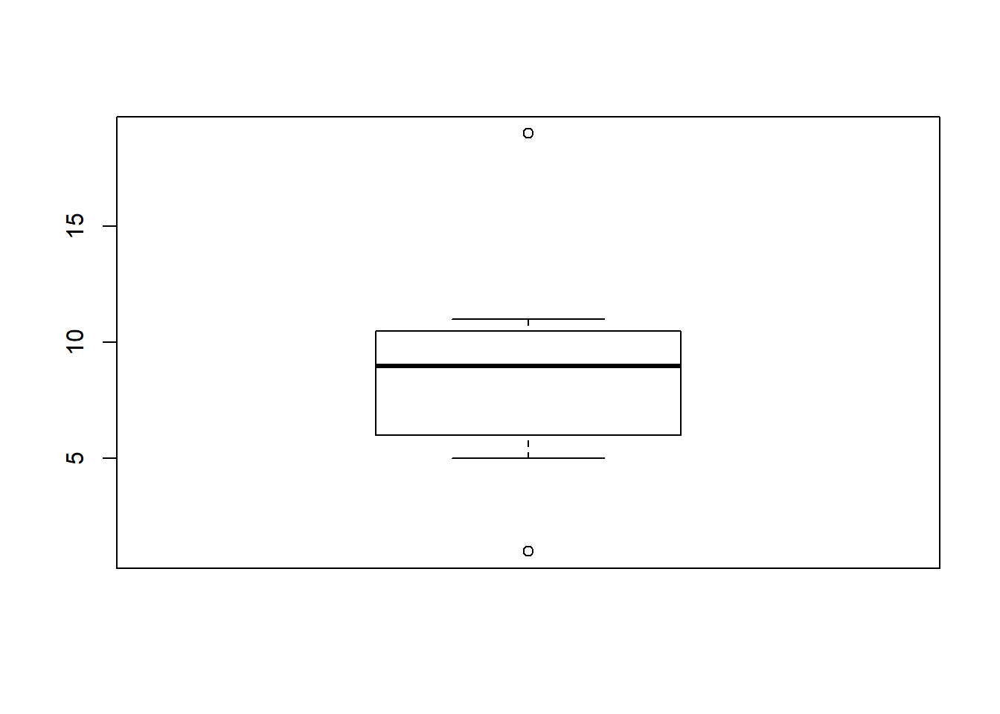
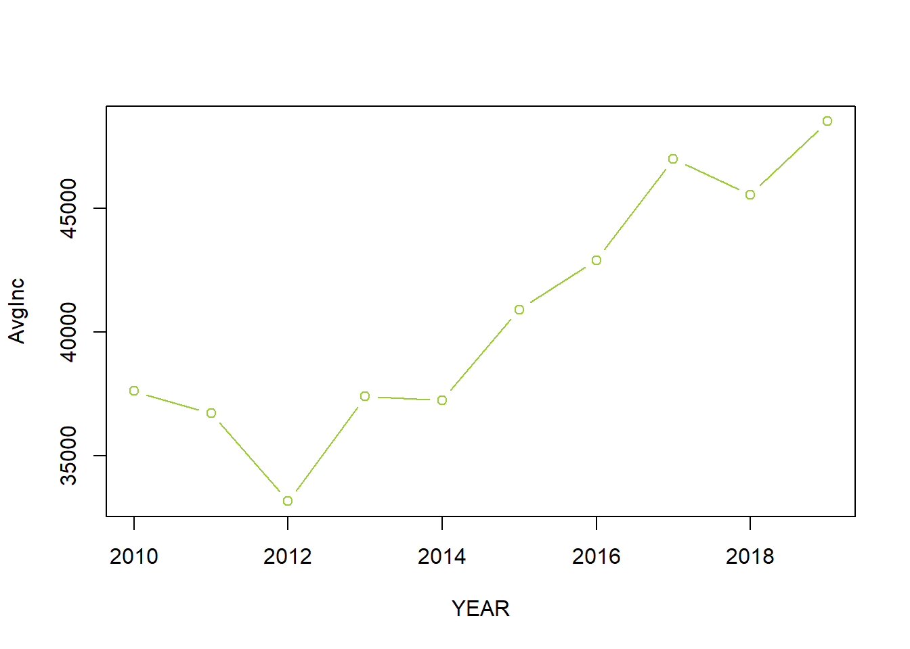

Chapter 6 Data Visualization with Base Functions
We go through the base plotting functions in R in this chapter.
## import the Minneapolis ACS dataset
minneapolis <- read.csv('minneapolis.csv')6.1 Scatter plot
Scatter plot is a good way to show the distribution of data points.
plot(minneapolis$AGE, minneapolis$INCTOT) # with first as x, and second as y
Or, you could use the variable names directly and indicate the dataset as the codes below. You will get the same result.
plot(INCTOT ~ AGE, data = minneapolis) # you have to specify the name of the data frame here
6.2 Line plot
You could transfer the scatter plot above to a line plot by just adding a type variable to indicate that you are plotting a line. Line plot is good for presenting the trend of a variable changing by time.
library(dplyr)
mean_income <- minneapolis %>%
group_by(YEAR) %>%
summarise(AvgInc = mean(INCTOT, na.rm = T))
plot(AvgInc ~ YEAR,
data = mean_income,
type = 'l') ## type indicates the line type with l
You could also choose another type by changing the value of type, as the one below.
plot(AvgInc ~ YEAR,
data = mean_income,
type = 'b') # b for both line and pintYou could use help(plot) to check more styles of the plots.
6.3 Bar plot
Bar plot is a good way to compare the values in each year or for each item. You could use barplot() to draw it.
barplot(mean_income$AvgInc,
names.arg = mean_income$YEAR) # names.org indicates the vector of names to be plotted under each bar6.4 Add more elements in the plots
For a reader-friendly plots, you have to add more information such as title, labels, and legend. For the plot above, we could use the codes below to make it more informative.
barplot(mean_income$AvgInc,
names.arg = mean_income$YEAR,
main = 'Bar plot of the average personal income in Minneapolis (2010-2019)', # add title for the plot
xlab = 'Year', # add label tag for the x-axis
ylab = 'Personal income (dollars)', # add label for the y-axis
ylim = c(0, 65000), # set the range of y axis, you could set the range of x axis with xlim
legend = 'Personal income') # add legend name6.5 Pie chart
Pie chart is a good way to show the share of each part. You could use pie() function to draw a pie chart in R.
minneaplis_race <- minneapolis %>%
mutate(
RACE = case_when( ## change RACE from numeric values to racial categories
RACE == 1 ~ 'White',
RACE == 2 ~ 'African American',
RACE == 3 ~ 'American Indian'
)
) %>%
group_by(RACE) %>%
summarise(count = n())
pie(minneaplis_race$count, # value for each piece
labels = minneaplis_race$RACE) # label for each piece
6.6 Boxplot
Box plot is also called box-whisker plot. It is to present the distribution of the dataset based on their quartiles. In R, you could use boxplot() to draw a box plot.
t <- c(1, 5, 10, 7, 8, 10, 11, 19)
boxplot(t, range = 0) # set range = 0 makes the whiskers reach the smallest and largest values in the dataset
t <- c(1, 5, 10, 7, 8, 10, 11, 19)
boxplot(t, range = 1) # set range = 1 makes the the whiskers extend to the most extreme data point which is no more than range times the interquartile range from the box
6.7 Color in R
You could change the color of the plots by adding col = in the functions. For example.
plot(AvgInc ~ YEAR,
data = mean_income,
type = 'b',
col = 'YellowGreen') # specify the name of the color
Here is a link where you could find the name of the color.
You could also use the hexadecimal color code to indicate the color. For example.
barplot(mean_income$AvgInc,
names.arg = mean_income$YEAR,
main = 'Bar plot of the average personal income in Minneapolis (2010-2019)',
xlab = 'Year',
ylab = 'Personal income (dollars)',
ylim = c(0, 65000),
legend = 'Personal income',
col = '#009999') # use the hexadecimal color code, you need to start it with the hash tag
By the same link, you could also find the hexadcimal code for each color.